承认欲求，拉满
想被所有人注意到、被夸奖、被当成主角。这份欲望毫不遮掩，反而是她最鲜明的标签。
核心动机选一套喜欢的衣服，打个招呼。表情会随爱音正在说的话自然变化。
靠近这里时开始加载模型…
Live2D 运行时没能加载（多为 CDN 不可达），这里先显示静态立绘。
本站原创的本地关键词互动，非官方台词。此模式不上传聊天内容，刷新即清空。
此款没有独立表情文件；聊天会按语气自动选择演奏动作，无需输入动作关键词，也可在上方手选。
从一张名片，认识舞台上的她。
MyGO!!!!! 吉他手。明朗健谈、富有行动力，喜欢尝试新鲜事。
官方设定为起点，也留一点粉丝自己的理解。
明朗的社交力，向前的行动力。想被看见的她，也在学着看见身边的人。
羽丘女子学园的高一学生。成绩优秀，沟通能力和行动力都很强；初中时是班里的人气王， 还担任过学生会会长。性格爱赶时髦，容易追着流行的东西跑。
在本站看来，她很有意思的一面是：能力很强，动机很轻。起初，比起对音乐的热爱， 她更在意人群的目光——想被看见、想被夸、想站在最中间。这份「承认欲求」既是她的笑点， 也是她所有行动的起点。
所以她的成长并不是「突然爱上音乐」的爽文，而是从表演给谁看，变成认真弹给谁听。 她会因为别人的评价而动摇，也会为了不输而练到手指发疼——这种不彻底、会犯懒、却一直在往前走的姿态， 大概就是她最容易被喜欢的地方。
来自萌娘百科的角色笔记，以及一次次被粉丝记住的瞬间。
年份按赛事赛季记录；以下为粉丝社区评选，并非作品官方奖项。
本站自制的战报海报，画面使用站内官方立绘；版式与文案为粉丝应援创作，并非赛事官方海报。
六张卡，看懂爱音ちゃん的行动逻辑。
想被所有人注意到、被夸奖、被当成主角。这份欲望毫不遮掩，反而是她最鲜明的标签。
核心动机沟通力与行动力俱佳，初中是班级人气王，还当过学生会会长。让她出面交涉，基本都能谈成。
官方设定什么火就追什么，乐器、穿搭、话题都跟得上。学吉他的起点，也带着一点「现在流行这个」的味道。
官方设定别被轻浮的外表骗了。官方明确写着成绩优秀——要做事的时候，她是真的能做成的类型。
官方设定半路出家开始练琴，嘴上说着轻松，手上却越练越狠。她讨厌的不是辛苦，是被人比下去。
性格解读她会被别人的评价搅乱心情，也会逞强。但在乐队里，她一点点学会了：被看见，不等于要变成别人期待的样子。
成长主题从「想红」到「想一起走下去」：动画本篇、手游剧情与 Ave Mujica 那条线放在一起看。以下含剧透。
转入羽丘女子学园的爱音，遇见了抱着笔记本、独自唱歌的高松燈。一个想被人群包围的人，先认识了一个躲开人群的人。
动机并不纯粹：组一支乐队、站上舞台、被人记住。但她真的开始练了，也真的开始在意弹得好不好。
与长崎そよ、要楽奈、椎名立希陆续结识。成员们各自带着旧伤和执念，谁都不是轻松凑在一起的伙伴。
直到第 12 话，乐队才终于有了名字。全员都是迷路的孩子；同时，「It's my go.」＝「轮到我了」。
动画播完之后，MyGO!!!!! 实装进《BanG Dream! 少女乐团派对！》，与户山香澄等前辈乐队共用一条时间线；游戏里同步追加原创曲与翻唱曲，乐队剧情也从「第一章」开始往下写。
同一条时间线上还有一支朝相反方向走的乐队——Ave Mujica。她们的前身 CRYCHIC 是燈、そよ、立希与祥子、睦共同待过的乐队；解散之后，五个人走向了不同的舞台。爱音是后来者：她把 MyGO 拉了起来，也被卷进这段旧账慢慢摊开的过程里。
MyGO!!!!! 作为 BanG Dream! 第五支真实乐队启动，初期以「声优未公开」的形式活动。
《BanG Dream! It's MyGO!!!!!》开始播出，爱音与伙伴们的故事被更多人认识。
MyGO!!!!! 在《BanG Dream! 少女乐团派对！》正式实装：追加 2 首原创曲与 2 首翻唱曲，迷星叫 追加 3D LIVE MODE，同日开启第一期乐团专属活动（MyGO!!!!! 乐团剧情第一章）。
6th LIVE 追加公演在上海举行，这是乐队第一次走出日本开唱。
动画加上新画面重新剪辑上大银幕：前篇《春の陽だまり、迷い猫》于 9 月 27 日上映，后篇《うたう、僕らになれるうた & FILM LIVE》于 11 月 8 日上映。
作为《It's MyGO!!!!!》的续篇，Ave Mujica 的故事从另一侧展开（全 13 话，播到 3 月 27 日）。MyGO!!!!! 与爱音也在这条线里继续出场。
与 Ave Mujica、CRYCHIC、sumimi 在 K Arena 横滨连开两天（DAY1 : Petrichor / DAY2 : Geosmin）；10 月 11 日–12 日追加上海梅赛德斯-奔驰文化中心公演。
MyGO!!!!! 是这部新作的初始五支乐队之一；同日确定 MyGO!!!!! 在旧手游的单独活动将停止更新。
两支乐队再次在 K Arena 横滨同台，年内另有台北追加公演——曾经的分岔路口，现在成了两个人一起走的路。
乐队持续产出新作与公演，爱音也一路唱到了现在——还在往更远的地方走。
MyGO!!!!! 的单曲与专辑，附官方读法、封面，以及官方 MV / 试听入口。
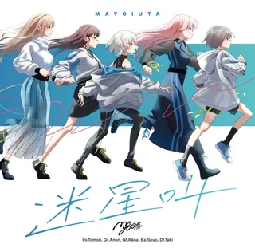
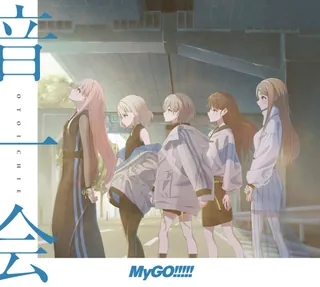
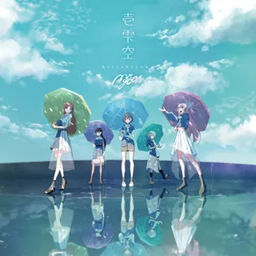
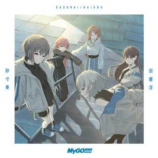
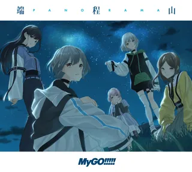
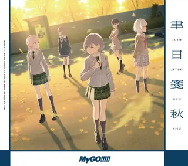
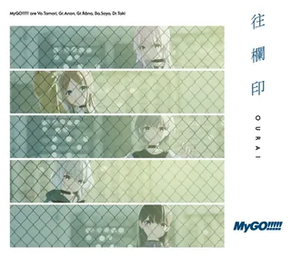
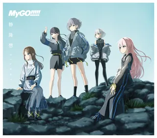
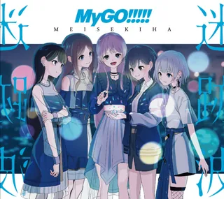
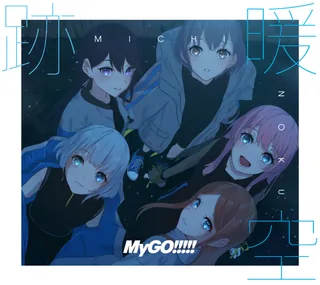
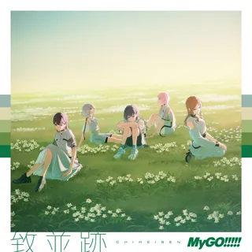
本站收录 16 张卡片。搜名字、选稀有度，找到喜欢的那一张；点开可切换「特训前 / 特训后」。
没有找到符合条件的卡面。试试换个名字，或取消筛选。
立牌、挂件与玩偶，来自武士道官方商店的爱音周边。
没有符合当前条件的周边，换个类型看看吧。
官方商店目前不配送日本以外地区；淘宝与 bilibili 会员购按钮为按商品名检索的入口，请自行核对卖家、版本与价格。
逛逛官方爱音专区把想说的话留下来。留言仅保存在当前浏览器，不会上传。
想看一手消息，去这几个地方。
角色资料归纳自 BanG Dream! 官方网站；商品图片、价格与售卖状态取自武士道官方商店。商品信息为核验时快照，结算以商店页面为准。
官方角色页 · 官方商店卡面及原有模型来自 Bestdori（角色 ID 37），新增模型来自 bdon.moe 的 Our Notes 资料。模型与图片版权归各权利人所有；互动对话为非官方同人演绎，不代表官方发言。
Bestdori 角色资料 · Our Notes 模型来源 · Live2D 许可摘编自萌娘百科《千早爱音》，保留版本与原文链接。相关归纳改写文本依 CC BY-NC-SA 4.0 共享；该许可不涵盖角色及商品图片。
原文贡献者 · 文本许可按 ← → 浏览当前筛选结果，Esc 关闭。